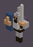
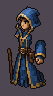
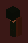
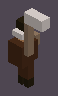

warrior
hero. Figure warrior on heroes.jpg at 24,158,268,412. Silhouette 649 pixels. Night 44.14, dusk 51.12, day 100.47.



npm run models wrote these frames at game zoom through the pixel path. The pictures on this page are the goldens in test/gallery/. CI uploads the same bytes as artifacts/gallery/. A second run has to match. The concept sheets are heroes.jpg (present), monsters.jpg (present), theme.jpg (present). Do not invent a substitute sheet.
hero. Figure warrior on heroes.jpg at 24,158,268,412. Silhouette 649 pixels. Night 44.14, dusk 51.12, day 100.47.

hero. Figure mage on heroes.jpg at 312,124,196,448. Silhouette 505 pixels. Night 34.84, dusk 40.1, day 79.66.



hero. Figure scout on heroes.jpg at 524,100,216,480. Silhouette 346 pixels. Night 40.45, dusk 46.07, day 89.99.



hero. Figure farmer on heroes.jpg at 752,98,250,480. Silhouette 848 pixels. Night 44.04, dusk 59.41, day 131.45.


hero. Figure engineer on heroes.jpg at 1016,158,224,432. Silhouette 430 pixels. Night 39.85, dusk 46.22, day 90.19.



monster. Figure goblin on monsters.jpg at 16,328,236,246. Silhouette 380 pixels. Night 31.75, dusk 38.95, day 79.42.


monster. Figure skeleton on monsters.jpg at 260,328,260,246. Silhouette 162 pixels. Night 43.55, dusk 50.98, day 99.46.


monster. Figure wolf on monsters.jpg at 760,340,270,245. Silhouette 249 pixels. Night 32.21, dusk 40.79, day 81.36.


monster. Figure ogre on monsters.jpg at 524,292,226,286. Silhouette 1045 pixels. Night 33.28, dusk 39.73, day 81.84.


monster. Figure dark rider on monsters.jpg at 1000,70,275,520. Silhouette 1333 pixels. Night 20.78, dusk 24.16, day 50.81.


building. Figure palisade on theme.jpg at 160,280,250,220. Silhouette 313 pixels. Night 33.46, dusk 39.53, day 71.3.


building. Figure stone tower on theme.jpg at 590,36,120,130. Silhouette 592 pixels. Night 30.59, dusk 34.93, day 65.08.


building. Figure ground torch on theme.jpg at 520,490,100,90. Silhouette 265 pixels. Night 21.02, dusk 28.8, day 58.98.


building. Figure wheat on theme.jpg at 740,300,250,140. Silhouette 326 pixels. Night 23.35, dusk 32.88, day 65.4.


building. Figure lit house on theme.jpg at 500,190,200,150. Silhouette 517 pixels. Night 28.06, dusk 33.12, day 61.14.


building. Figure spell light on theme.jpg at 470,330,160,140. Silhouette 524 pixels. Night 31.13, dusk 35.64, day 74.88.


prop. Figure keep on theme.jpg at 548,28,188,230. Silhouette 6583 pixels. Night 22.1, dusk 28.61, day 59.65.


prop. Figure pine on theme.jpg at 0,500,180,210. Silhouette 384 pixels. Night 22.18, dusk 27.49, day 53.37.


prop. Figure pine trunk on theme.jpg at 1080,160,180,260. Silhouette 122 pixels. Night 21.88, dusk 26.17, day 50.6.